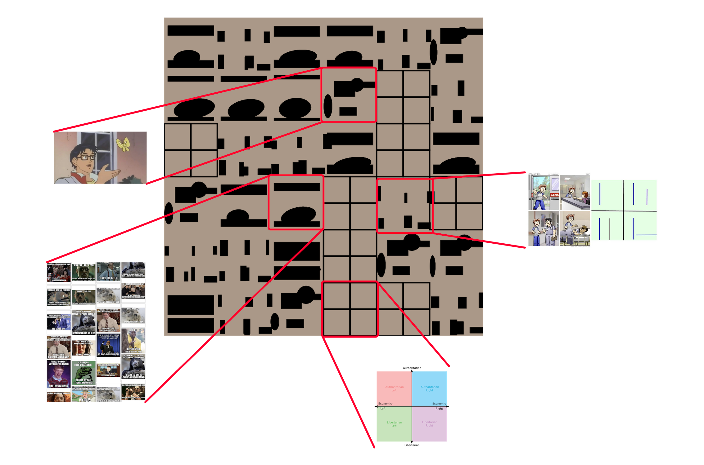
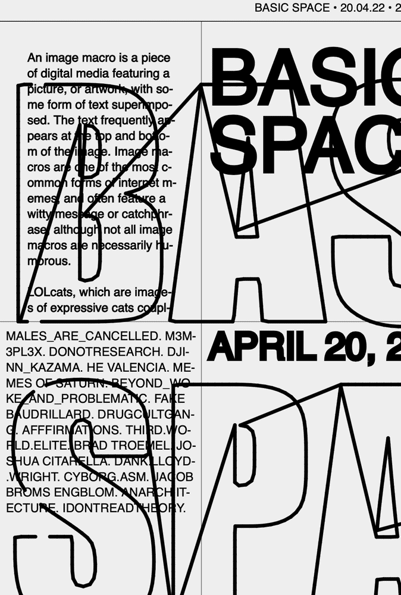
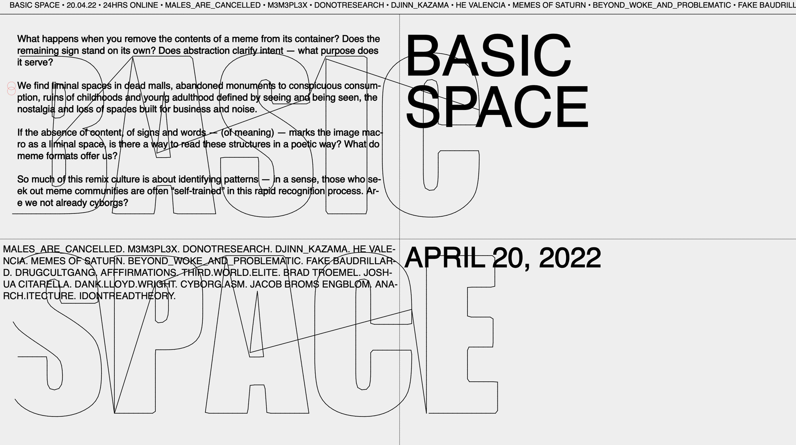

⚠︎ Text contains flashing images.
Drawing from my interests in aesthetics and online culture, Basic Space is a small fictional festival exploring the design of meme formats to ask, how do information and content relate to their container? Diagrammatic things carry a natural importance and legitimacy — what happens when we empty memes, media that often is already so distilled to its most essential ideas?
This project emerged from an exercise to program a generative pattern maker. Pulling from four popular meme formats — the political compass, Advice Animals, Is This A Pigeon, and Loss — I began with a dense, quiltlike texture, which ultimately makes up the background of the event’s posters.


After experimenting with the tool at different scales and color settings, I landed on a final pattern, which I then riso-printed.

The festival’s promotional materials come with a microsite prototyped in p5.js. As a metaphor for the anatomy of memes, mouse interactions reveal the outlines of the festival’s name — the bubbling circle changing color as the visitor hovers over the four quadrants, referencing the political compass. By using widely available typefaces, these assets emphasize the content-driven nature of memes as a communicative medium.
 